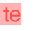

Text
This chapter describes the basic text support provided by Quartz and shows how to use Quartz 2D text in your application. Quartz 2D provides a limited, low-level interface for drawing text encoded in the MacRoman text encoding and for drawing glyphs. (See CGFont Reference.) If basic text support is all your application needs, then read this chapter. If you want to support user input of text, text editing, or you need precise control over text layout or access to font features, you may want to skip this chapter and instead read Getting Started with Text and Fonts and then investigate using one of the following:
Core Text, introduced in Mac OS X v10.5, is an advanced, low-level technology for laying out text and handling fonts that is designed for high performance and ease of use. Its layout engine is up to twice as fast as ATSUI (Apple Type Services Unicode Imaging). Like ATSUI, you can use Core Text to draw Unicode text directly to a graphics context. If possible, you should use Core Text.
ATSUI lays out and draw text. If your application needs to perform a task that’s not supported by Core Text, consider ATSUI. If your application runs in versions of Mac OS X earlier that v10.5, you’ll need to use ATSUI for layout service.
The text facilities provided through the Carbon and Cocoa frameworks.
In this section:
How Quartz 2D Draws Text
Controlling How Text Looks
Drawing Text
Measuring Text Before Drawing
Copying Font Variations
PostScript Fonts
See Also
How Quartz 2D Draws Text
Quartz 2D uses fonts, which are sets of shapes that are associated with characters, to draw text. A character abstractly represents the concept of, for example, a lowercase “b”, the number “2”, or the arithmetic operation “+”. You do not ever see a character on a display device. What you see on a display device is a glyph, the path that serves as the visual representation of the character. One glyph can represent one character, such as a lowercase “b”; more than one character, such as the “fi” ligature, which is a single glyph representing two characters; or a non printing character, such as the space character.
The mapping from a byte code (sometimes called a character code) to a specific character is specified by a text encoding. For example, you use the numeric byte code value 65 to specify an uppercase “A” from a font encoded using the ASCII text encoding.
When you want to print or display text, you generally refer to characters rather than glyphs. Quartz renders glyphs using font data provided by the Apple Type Services (ATS) framework.
You specify the location of text in user space coordinates. The text matrix specifies the transform from text space to user space. The text position is stored in the tx and ty variables of the text matrix. When you first create a graphics context, it initializes the text matrix to the identity matrix, thus text space coordinates are initially the same as user space coordinates.
Quartz conceptually concatenates the text matrix with the current transformation matrix and other parameters from the graphics state to produce the final text rendering matrix, the matrix actually used to draw the text on the page. The text matrix does not include the font size, which is always expressed in text space.
When Quartz draws the text, it retrieves the relevant glyphs from the ATS font server and paints them using the current parameters in the graphics state, such as fill color (if the text is filled) and stroke color. After a drawing operation, the text position remains at the last point used to image the text.
Controlling How Text Looks
Some of the settings in the graphics state that apply to painting paths also apply to text drawing. Stroke color and fill color are two such attributes. (See “Paths”) for other attributes and operations that affect text rendering.)
Several text drawing attributes apply only to text. You can set the values of these attributes using the Quartz functions listed in Table 17-1. Notice that the function CGContextSelectFont sets both the font and the font size. It also sets the text encoding. “Drawing Text” discusses the difference between using CGContextSelectFont and CGContextSetFont.
Attribute | Function | Specifies |
|---|---|---|
Font | Typeface. | |
Font size | Size in text space units. | |
Character spacing | The amount of extra space (in text space units) between character glyphs. | |
Text drawing mode | How Quartz renders the individual glyphs onscreen. See Table 17-2 for a list of text drawing modes. | |
Text matrix | The transform from text space to user space. | |
Text position | The location at which text is drawn. |
The text matrix is a transform that operates similarly to the current transformation matrix (CTM), but only on text. You can apply transforms to the text matrix, using any of the affine transform functions to build as complex a transform as you’d like. When you draw the text, Quartz uses the text matrix you supply along with the CTM. When you draw anything other than text, Quartz uses the CTM and not the text matrix.
Use this mode | When you want to . . . | Example |
|---|---|---|
Perform a fill operation on the text. | ||
Perform a stroke operation on the text. |
| |
Perform both fill and stroke operations on the text. | ||
Get text positions for the purpose of measuring text but not display the text. Note that the text position (x, y) is updated, as with all of the drawing modes. | ||
Perform a fill operation, then add the text to the clipping area. | ||
Perform a stroke operation, then add the text to the clipping area. | ||
Perform both fill and stroke operations, then add the text to the clipping area. | ||
Add the text to the clipping area, but do not draw the text. |  |
Drawing Text
When you use Quartz 2D to draw text, you need to perform these tasks:
Set the font and font size.
Set the text drawing mode.
Set other items as needed—stroke color, fill color, clipping area.
Set up a text matrix if you want to translate, rotate, or scale the text space.
Draw the text.
Quartz 2D provides two ways to set the font and font size. You can call either the function CGContextSelectFont or the functions CGContextSetFont and CGContextSetFontSize. If your requirements are simple, you’ll probably want to use CGContextSelectFont. If your requirements are more complex, you can use the alternative functions, CGContextSetFont and CGContextSetFontSize. But instead of using CGContextSetFont and CGContextSetFontSize, you may instead want to use ATSUI or Cocoa to set the font and perform text drawing. That’s because Quartz has some limitations for drawing text. Here’s a closer look at the two Quartz 2D alternatives.
If setting the font to a MacRoman text encoding is sufficient for your application, use the CGContextSelectFont function. Then, when you are ready to draw the text, you call the function CGContextShowTextAtPoint. The function CGContextSelectFont takes as parameters a graphics context, the PostScript name of the font to set, the size of the font (in user space units), and a text encoding.
To set the font to a text encoding other than MacRoman, you can use the functions CGContextSetFont and CGContextSetFontSize. You must supply a CGFont object to the function CGContextSetFont. You call the function CGFontCreateWithPlatformFont to obtain a CGFont object from an ATS font. When you are ready to draw the text, you use the function CGContextShowGlyphsAtPoint rather than CGContextShowTextAtPoint.
The reason you cannot use CGContextShowTextAtPoint when you use CGContextSetFont is that Quartz needs a text encoding to map the bytes in the text string to glyphs in the font. By default, the text encoding is kCGEncodingFontSpecific, so there's no guarantee of what you'll get when you call CGContextShowTextAtPoint. Since there's no way to set the text encoding other than with a call to CGContextSelectFont you cannot draw text using CGContextShowTextAtPoint if you set the font with CGContextSetFont. If you set the font this way, you must also be prepared to use ATSUI, Cocoa, or your own code to map character strings to glyphs so that you can then call CGContextShowGlyphsAtPoint. It might be easier for you to simply use ATSUI or Cocoa to perform the text drawing, and not use any of the Quartz 2D functions.
Now that you understand some of the limitations of using Quartz to draw text, you can take a look some sample code that draws text when the font and font size are set using the function CGContextSelectFont. This function, although not recommended except for cases in which MacRoman encoding is sufficient, is fairly straightforward to use. Listing 17-1 shows a function—MyDrawText—that draws the text shown in Figure 17-1. A detailed explanation for each numbered line of code appears following the listing.
Listing 17-1 Drawing text
void MyDrawText (CGContextRef myContext, CGRect contextRect) // 1 |
{ |
float w, h; |
w = contextRect.size.width; |
h = contextRect.size.height; |
CGAffineTransform myTextTransform; // 2 |
CGContextSelectFont (myContext, // 3 |
"Times-Bold", |
h/10, |
kCGEncodingMacRoman); |
CGContextSetCharacterSpacing (myContext, 10); // 4 |
CGContextSetTextDrawingMode (myContext, kCGTextFillStroke); // 5 |
CGContextSetRGBFillColor (myContext, 0, 1, 0, .5); // 6 |
CGContextSetRGBStrokeColor (myContext, 0, 0, 1, 1); // 7 |
myTextTransform = CGAffineTransformMakeRotation (MyRadians (45)); // 8 |
CGContextSetTextMatrix (myContext, myTextTransform); // 9 |
CGContextShowTextAtPoint (myContext, 40, 0, "Quartz 2D", 9); // 10 |
} |
Here’s what the code does:
Takes as parameters a graphics context and a rectangle to draw to.
Declares storage for the affine transform.
Sets the font to Times Bold and the font size to the height of the page rectangle divided by 10. The font size is in text space units. In this example, the text is drawn to a resizable window. When the user resizes the window, the text resizes as well. The encoding is set to
kCGEncodingMacRoman, but the only other choice iskCGEncodingFontSpecific.Sets the character spacing to 10 text space units. You call this function only if you want to add the additional space to the advance between the origin of one glyph and the origin of the next glyph.
Sets the text drawing mode to fill and stroke.
Sets the fill color to green with an alpha value of .5 for a partially transparent fill. Note that this is not a text-specific attribute. The fill color applies to the graphics state.
Sets the stroke color to opaque blue. This is another attribute that is not text specific.
Creates an affine transform that performs a 45 degree rotation. The
MyRadiansroutine is an application-defined convenience function for computing degrees from radians. You either need to supply your own routine to convert degrees to radians, or you need to substitute this call with a value that specifies radians. Otherwise, this code example will not compile.Sets the text matrix to the transform created in the last step.
Draws the text, passing the x- and y-coordinates in text space to start the drawing (40, 0), an array of characters to draw, and a value that specifies the length of the text array. In this case, you pass a C-style string and the value
9to specify the number of characters.
Measuring Text Before Drawing
If text measurements are important to your application, it is possible to calculate them using Quartz 2D functions. However, you might first consider using ATSUI, whose strength is in text layout and measurement. ATSUI has several functions that obtain text metrics. Not only can you obtain after-layout text metrics, but in the rare cases you need them, you can obtain before-layout text metrics. Unlike Quartz, for which you must perform the calculations yourself, ATSUI computes the measurements for you. For example, you can obtain the image bounding rectangle for text by calling the ATSUI function ATSUMeasureTextImage.
If you decide that Quartz text suits your needs better than ATSUI (or Cocoa), you can follow these steps to measure the width of text before Quartz draws it:
Call the function
CGContextGetTextPositionto obtain the current text position.Set the text drawing mode to
kCGTextInvisibleusing the functionCGContextSetTextDrawingMode.Draw the text by calling the function
CGContextShowTextto draw the text at the current text position.Determine the final text position by calling the function
CGContextGetTextPosition.Subtract the starting position from the ending position to determine the width of the text.
Copying Font Variations
A font variation is a setting along a variation axis that allows your application to produce a range of typestyles algorithmically. Each variation axis has:
A name (such as
'wght') that indicates the typestyle that the axis represents, specified in the font variation axis dictionary using the keykCGFontVariationAxisName.A set of maximum and minimum values for the axis, specified in the font variation axis dictionary using the keys
kCGFontVariationAxisMinValueandkCGFontVariationAxisMaxValue.The default value of the axis, specified in the font variation axis dictionary using the key
kCGFontVariationAxisDefaultValue.
The weight axis, for example, governs the possible values for the weight of the font—the minimum value produces the lightest appearance of that font, the maximum value the boldest. The default value is the position along the variation axis at which that font falls normally. Because the axis is created by the font designer, font variations can be optimized for their particular font. Not all fonts have variations.
Quartz provides three functions in Mac OS X v10.4 that let you work with font variations:
CGFontCreateCopyWithVariations, which creates a copy of a font using a variation specification dictionary. The function returns a font created by applying the specified variation specification dictionary to the font you provide.CGFontCopyVariations, which returns a dictionary that contains the font variations, orNULLif the font doesn’t support variations.CGFontCopyVariationAxes, which returns an array of variation axis dictionaries, orNULLif the font doesn’t support variations.
PostScript Fonts
Quartz provides several functions in Mac OS X v10.4 that support PostScript and allow you to:
Obtain the PostScript name of a font.
Determine whether or not you can create a subset of a font in Postscript format.
Create a subset of a font in PostScript format.
Create a PostScript encoding of a font.
If you need to work with PostScript fonts, see CGFont Reference for detailed information on the Quartz functions for PostScript.
See Also
CGFont Reference provides a complete description of each of the Quartz text functions discussed in this chapter.
Core Text Programming Guide discusses the text programming interface added in Mac OS X v10.5 and shows how to use it.
ATSUI Programming Guide explains how to lay out, process, and draw Unicode text.
ATSUI Reference describes the ATSUI application programming interface.
Text System Overview provides a survey of the Cocoa text system.
© 2001, 2007 Apple Inc. All Rights Reserved. (Last updated: 2007-12-11)